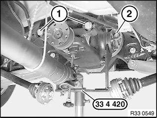
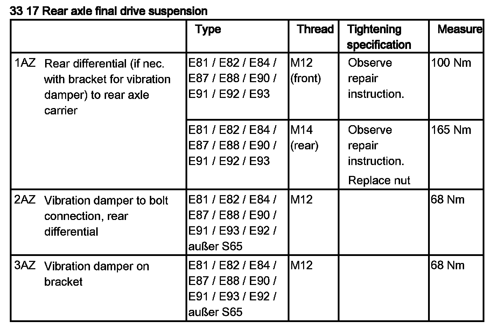

33 10 010 Removing And Installing/Replacing Rear Differential
33 10 010 Removing and installing/replacing rear differentialSpecial tools required:
Important!
Use only approved rear differential oils!
Note:
The following sequence was created using the E87 with N45 as an example.
Differences in detail (e.g. due to vibration damper) in other engines are possible.
Necessary preliminary tasks:
^ Remove propeller shaft on final drive.
^ Remove output shaft from rear differential at both ends and tie back

Important!
Observe gap between special tool 33 4 420 and dust plates.
To avoid grinding noises, make sure the dust plates are not damaged (e.g. bent).
Support rear differential with workshop jack and special tool 33 4 420.
Release screws (1).
Release nut (2) and remove screw towards rear.
Slowly lower workshop jack and remove rear differential towards rear.
Important!
Adhere to the following installation sequence in order to prevent distortion of the rear differential during installation and thereby avoid potential complaints about noise.

Installation sequence:
1. Install rear differential with workshop jack and special tool 33 4 420
2. Insert bolts (1) (do not tighten down)
3. Insert bolt from rear and replace nut (2) (do not tighten down)
4. Lower workshop jack
5. Tighten down screws (1)
Tightening torque 33 17 1AZ.
6. Tighten nut (2)
Tightening torque 33 17 1AZ.
After installation:
^ Check rear differential oil level, correct if necessary.
Applies to four-wheel drive only:
Replacement only:
^ With BMW Diagnosis and Information System under:
- Control-module functions
Perform functional check of transfer box (calibration)
